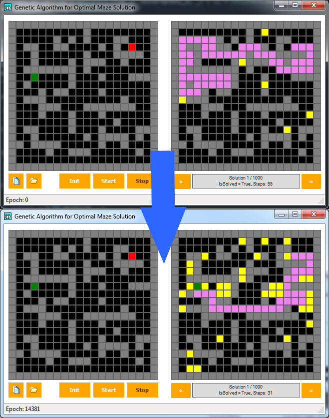

The project is intended as a complement to my second article on TechNet Wiki about genetic algorithms. The program allows the creation of a 2D maze, generating solutions for it. Through each generation of solutions, it tries to find the best approach to solve the maze, i.e. finding the shortes route to its exit.
No special requirements are needed in building the sample. Just open the solution in Visual Studio, and execute it. If you wish to use a pre-created maze, just open the file "test_maze.txt", included with the current package.
Description
In my code, i will provide the means to allow a user to draw its own 2D maze. Once finished, initial solutions will be created, evaluating the fitness for each one of them. The best are extracted, and their characteristics are combined to produce a new set of solutions. In executing the loop, the user will be able to see how the algorithm adapt itself to be able to solve the maze in the most efficient way.
' Generic Function to retrieve a 2D maze solution's domain
Private Function Solve(_X As Integer, _Y As Integer) As Boolean
If solverBytes(_endPos(0), _endPos(1)) = CELLSTATE.Valid Then Return True
If solverBytes(_X + 1, _Y) = CELLSTATE.Free Or solverBytes(_X + 1, _Y) = CELLSTATE.Start Or solverBytes(_X + 1, _Y) = CELLSTATE.Finish Then
solverBytes(_X + 1, _Y) = CELLSTATE.Valid
If Solve(_X + 1, _Y) Then Return True
End If
If solverBytes(_X - 1, _Y) = CELLSTATE.Free Or solverBytes(_X - 1, _Y) = CELLSTATE.Start Or solverBytes(_X - 1, _Y) = CELLSTATE.Finish Then
solverBytes(_X - 1, _Y) = CELLSTATE.Valid
If Solve(_X - 1, _Y) Then Return True
End If
If solverBytes(_X, _Y + 1) = CELLSTATE.Free Or solverBytes(_X, _Y + 1) = CELLSTATE.Start Or solverBytes(_X, _Y + 1) = CELLSTATE.Finish Then
solverBytes(_X, _Y + 1) = CELLSTATE.Valid
If Solve(_X, _Y + 1) Then Return True
End If
If solverBytes(_X, _Y - 1) = CELLSTATE.Free Or solverBytes(_X, _Y + 1) = CELLSTATE.Start Or solverBytes(_X, _Y + 1) = CELLSTATE.Finish Then
solverBytes(_X, _Y - 1) = CELLSTATE.Valid
If Solve(_X, _Y - 1) Then Return True
End If
Return False
End Function
' Generic Function to retrieve a 2D maze solution's domain Private Function Solve(_X As Integer, _Y As Integer) As Boolean If solverBytes(_endPos(0), _endPos(1)) = CELLSTATE.Valid Then Return True If solverBytes(_X + 1, _Y) = CELLSTATE.Free Or solverBytes(_X + 1, _Y) = CELLSTATE.Start Or solverBytes(_X + 1, _Y) = CELLSTATE.Finish Then solverBytes(_X + 1, _Y) = CELLSTATE.Valid If Solve(_X + 1, _Y) Then Return True End If If solverBytes(_X - 1, _Y) = CELLSTATE.Free Or solverBytes(_X - 1, _Y) = CELLSTATE.Start Or solverBytes(_X - 1, _Y) = CELLSTATE.Finish Then solverBytes(_X - 1, _Y) = CELLSTATE.Valid If Solve(_X - 1, _Y) Then Return True End If If solverBytes(_X, _Y + 1) = CELLSTATE.Free Or solverBytes(_X, _Y + 1) = CELLSTATE.Start Or solverBytes(_X, _Y + 1) = CELLSTATE.Finish Then solverBytes(_X, _Y + 1) = CELLSTATE.Valid If Solve(_X, _Y + 1) Then Return True End If If solverBytes(_X, _Y - 1) = CELLSTATE.Free Or solverBytes(_X, _Y + 1) = CELLSTATE.Start Or solverBytes(_X, _Y + 1) = CELLSTATE.Finish Then solverBytes(_X, _Y - 1) = CELLSTATE.Valid If Solve(_X, _Y - 1) Then Return True End If Return False End Function

For more information about the topic, you can refer to my TechNet article at: http://social.technet.microsoft.com/wiki/contents/articles/29756.algoritmi-genetici-nella-risoluzione-di-labirinti-bidimensionali-it-it.aspx
It is available in Italian only, but soon i will provide English translation. Please refer to this page to know the link when it will be ready.